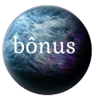

SOBRE NÓS DO WEBSITE ASTROMANAS


 < img Giovanna src =" ../AstroManas/Imagens/Isabela.jpg " style =" float:right " id =" img_circular " height =" 15% " width =" 36% " >
< img Giovanna src =" ../AstroManas/Imagens/Isabela.jpg " style =" float:right " id =" img_circular " height =" 15% " width =" 36% " >
Somos estudantes do Curso Técnico de Informática Integrado ao Ensino Médio do Instituto Federal de SP, e a ideia desse site surgiu da disciplina de Teoria e Desenvolvimento de Sistemas. A nossa equipe do website, em sala de aula reuniu-se em um grupo e decidimos elaborar um site informativo sobre mulheres na astronomia. Será abordado nesse blog a trajetória de mulheres que, de alguma forma, contribuíram no passado e das mulheres que são importantes atualmente para a astronomia, além de serem indicados alguns materiais extras e um quiz para testar o aprendizado do usuário sobre as astrônomas!!! Bom aprendizado e divertimento!!!
Entre em Contato conosco: blogastromanas@gmail.com
